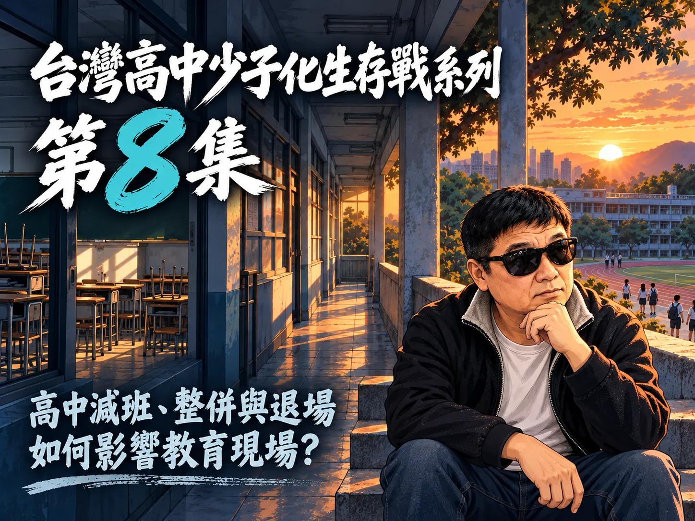

從招生現況，走向高中教育的下一種可能
00集總覽串起招生不足、公私立高中差異、學校經營、教師工作與編制、教育品質、校務調整、經費分配，以及未來10年的新生存模式。每一集以附件所列章節逐項展開。
台灣高中少子化生存戰 00｜10集摘要介紹
A00 摘要帶出高中少子化下的招生、師資、教育品質與資源配置問題，並延伸至未來10年的校園轉型與生存模式。
章節起點：學生變少之後，高中要怎麼改變？
- 00學生變少之後，高中要怎麼改變？
- 0110集如何從招生問題走向未來轉型
- 02第10集：未來10年，台灣高中需要什麼新的生存模式？
- 03第9集：高中教育資源與經費應如何重新分配？
- 04第8集：高中減班、整併與退場如何影響教育現場？
- 05第7集：學校招生不足，教育品質會變好還是變差？
- 06第6集：學生變少，為何教師行政負擔不一定減輕？
- 07第5集：正式教師與代理教師誰受到的影響更大？
- 08第4集：高中減班如何改變教師工作與編制？
- 09第3集：私立高中為何可能率先面臨經營困境？
- 10第2集：公立高中是否也開始感受到招生壓力？
- 11第1集：高中招生不足，哪些學校最先面臨危機？
- 12跨集回看：數字告訴我們什麼，仍看不見什麼？
- 13回到開場：高中要怎麼改變，學生才不會被落下？
台灣高中少子化生存戰 01｜高中招生不足，哪些學校最先面臨危機？
依據附件章節標題，整理「少子化之下，哪些高中最先感受到招生壓力？」及相關觀察，逐步呈現本集主題與問題脈絡。
章節起點：少子化之下，哪些高中最先感受到招生壓力？
- 00少子化之下，哪些高中最先感受到招生壓力？
- 01十大觀察順序與招生資料判讀方法
- 02第10名：適齡人口與招生來源變化
- 03第9名：全校學生總量是否持續下降
- 04第8名：公立與私立學生變化差異
- 05第7名：不同學程的學生變化幅度
- 06第6名：所在地與通學範圍的影響
- 07第5名：學校規模與學程組成
- 08第4名：近5年新生來源變化
- 09第3名：班級數與減班趨勢
- 10第2名：招生名額與實際入學落差
- 11第1名：多項招生訊號是否長期同時出現
- 12官方案例：改善完成與依法停招的不同結果
- 13缺額增加不等於退場：回到開場問題
台灣高中少子化生存戰 02｜公立高中是否也開始感受到招生壓力？
依據附件章節標題，整理「公立高中真的一定不缺學生嗎？」及相關觀察，逐步呈現本集主題與問題脈絡。
章節起點：公立高中真的一定不缺學生嗎？
- 00公立高中真的一定不缺學生嗎？
- 01十大觀察順序與招生數據判讀
- 02第10名：適齡人口與生源變化
- 03第9名：校址、交通與跨區選校
- 04第8名：就學區名額與學生需求
- 05第7名：公立高中整體變化與區域差異
- 06第6名：不同學程的學生變化
- 07第5名：招生班級調整與名額變化
- 08第4名：一年級新生人數趨勢
- 09第3名：報到註冊與招生名額落差
- 10第2名：錄取門檻與志願序的解讀界線
- 11第1名：多項招生訊號是否持續出現
- 12六龜高中案例與公校招生安排
- 13招生壓力不等於退場：回到核心問題
台灣高中少子化生存戰 03｜私立高中為何可能率先面臨經營困境？
依據附件章節標題，整理「招生減少，私立高中會立刻陷入財務危機嗎？」及相關觀察，逐步呈現本集主題與問題脈絡。
章節起點：招生減少，私立高中會立刻陷入財務危機嗎？
- 00招生減少，私立高中會立刻陷入財務危機嗎？
- 01十大觀察方法與財務資料的判讀界線
- 02第10名：生源人口與招生區域變化
- 03第9名：全校學生數與新生來源變化
- 04第8名：招生名額與報到、註冊落差
- 05第7名：學雜費依賴與收入來源集中
- 06第6名：教職員薪資與人事支出
- 07第5名：固定營運成本與校舍設備維護
- 08第4名：經常收支與連續年度餘絀
- 09第3名：資產負債、借款與到期債務
- 10第2名：可動用現金與短期調度
- 11第1名：多項壓力訊號是否持續並相互印證
- 12光啟高中案例能證明什麼、不能證明什麼
- 13招生減少不等於退場：回到經營韌性
台灣高中少子化生存戰 04｜高中減班如何改變教師工作與編制？
依據附件章節標題，整理「開場：減班改變的是學生數，還是教師工作？」及相關觀察，逐步呈現本集主題與問題脈絡。
章節起點：開場：減班改變的是學生數，還是教師工作？
- 00開場：減班改變的是學生數，還是教師工作？
- 01十大觀察方法：員額、缺額與超額
- 02第10名：班級數是員額變化的起點
- 03第9名：教師總數走勢不等於超額名單
- 04第8名：不同學科的課程需求
- 05第7名：授課節數與工作負荷
- 06第6名：專長配置與課程銜接
- 07第5名：正式、代理與兼任教師結構
- 08第4名：超額認定與正式程序
- 09第3名：跨校授課與合聘安排
- 10第2名：介聘與安置機會
- 11第1名：多項訊號是否持續交疊
- 12全國趨勢與制度案例：個別教師案例的判讀界線
- 13回到問題：減班不等於教師失業
台灣高中少子化生存戰 05｜正式教師與代理教師誰受到的影響更大？
依據附件章節標題，整理「高中減班，誰先感受到工作不確定？」及相關觀察，逐步呈現本集主題與問題脈絡。
章節起點：高中減班，誰先感受到工作不確定？
- 00高中減班，誰先感受到工作不確定？
- 01先釐清身分，再看十大差異
- 02第10名：聘任身分先分清楚
- 03第9名：班級變動不會等比例減少教師
- 04第8名：員額與職缺是兩種不同訊號
- 05第7名：聘期與續聘，把不確定性放在時間表上
- 06第6名：保障程序不同，代理教師也有明確權益
- 07第5名：薪資年資可採計，工作連續性仍有差別
- 08第4名：工作內容和職務調整，不能只看頭銜
- 09第3名：超額與介聘，主要是正式教師的調整路徑
- 10第2名：聘期結束後，一邊看介聘，一邊重新找缺
- 11第1名：多個訊號持續交疊，才看得出風險形狀
- 12案例交叉比較：數字說得出制度，看不見每個人的全部生活
- 13回到開場：誰受到的影響更大？
台灣高中少子化生存戰 06｜學生變少，為何教師行政負擔不一定減輕？
依據附件章節標題，整理「學生少了，老師的工作真的會變少嗎？」及相關觀察，逐步呈現本集主題與問題脈絡。
章節起點：學生少了，老師的工作真的會變少嗎？
- 00學生少了，老師的工作真的會變少嗎？
- 01先分清學生數、工作量和教師工時
- 02第10名：日常行政隨學生與班級變動
- 03第9名：招生宣導與生源維繫
- 04第8名：課程計畫、排課與選修安排
- 05第7名：評鑑、訪視與成果報告
- 06第6名：輔導、心理支持與個案追蹤
- 07第5名：特殊教育與跨專業支持
- 08第4名：校園安全與危機通報
- 09第3名：導師工作、家長溝通與出缺勤
- 10第2名：資料填報與跨處室協調
- 11第1名：基本責任還在，承辦人力是否改變？
- 12不同學校的工作，不會長得一樣
- 13回到問題：學生少了，行政負擔會減輕嗎？
台灣高中少子化生存戰 07｜學校招生不足，教育品質會變好還是變差？
依據附件章節標題，整理「學生變少，教育品質會變好還是變差？」及相關觀察，逐步呈現本集主題與問題脈絡。
章節起點：學生變少，教育品質會變好還是變差？
- 00學生變少，教育品質會變好還是變差？
- 01十大觀察面向與品質判讀界線
- 02第10名：班級人數與小班互動
- 03第9名：師生比與個別關注
- 04第8名：專任師資與專長配置
- 05第7名：課程開設與選修廣度
- 06第6名：個別化教學與學習支持
- 07第5名：設備、圖書與實作資源
- 08第4名：學生參與與同儕學習
- 09第3名：師生互動與學習環境
- 10第2名：學習歷程與階段性成果
- 11第1名：教學條件、經驗與成果的長期印證
- 12不同學校條件下的交叉比較
- 13招生不足本身不能決定教育品質
台灣高中少子化生存戰 08｜高中減班、整併與退場如何影響教育現場？

依據附件章節標題，整理「一所學校改變，改變的是誰的日常？」及相關觀察，逐步呈現本集主題與問題脈絡。
章節起點：一所學校改變，改變的是誰的日常？
- 00一所學校改變，改變的是誰的日常？
- 01怎麼讀懂十大影響順序？
- 02第十名：決策狀態與資訊公開
- 03第九名：受影響學生與年級差異
- 04第八名：轉學、學籍與課程銜接
- 05第七名：替代就學與交通負擔
- 06第六名：教師與行政人員的安置
- 07第五名：教學團隊與學生支持延續
- 08第四名：整併成本與校務轉換
- 09第三名：家庭照顧與地方教育服務
- 10第二名：校舍、校產與債務處理
- 11第一名：長期影響是否交疊並被追蹤
- 12案例交叉比較：公告能證明什麼？
- 13回到開場：把制度安排落實到生活
台灣高中少子化生存戰 09｜高中教育資源與經費應如何重新分配？
依據附件章節標題，整理「開場：學生變少，教育經費也要跟著減嗎？」及相關觀察，逐步呈現本集主題與問題脈絡。
章節起點：開場：學生變少，教育經費也要跟著減嗎？
- 00開場：學生變少，教育經費也要跟著減嗎？
- 01先看錢怎麼分，不把預算當成成果
- 02第10名：學生能否實際取得服務
- 03第9名：人數變動成本如何調整
- 04第8名：小校基本維持費與固定成本
- 05第7名：偏鄉交通與就近就學
- 06第6名：師資配置與課程完整性
- 07第5名：特殊教育的差異化支持
- 08第4名：設備、校舍維護與資本更新
- 09第3名：數位設備與持續使用
- 10第2名：執行、透明與跨年度持續性
- 11第1名：公平、成本、效益與可行性
- 12不同學校條件，不能用同一把尺
- 13結尾：按需求調整，不是只按人頭加減
台灣高中少子化生存戰 10｜未來10年，台灣高中需要什麼新的生存模式？
依據附件章節標題，整理「未來10年，高中要如何改變？」及相關觀察，逐步呈現本集主題與問題脈絡。
章節起點：未來10年，高中要如何改變？
- 00未來10年，高中要如何改變？
- 01先看證據，再談新模式
- 02第10名：小班教學與特色課程
- 03第9名：跨校選課與區域課程聯盟
- 04第8名：區域共享師資與專業支持
- 05第7名：數位、同步遠距與混成課程
- 06第6名：多元學習與跨域服務
- 07第5名：產學合作與職涯實作
- 08第4名：校園空間活化與共享使用
- 09第3名：小校與地方社區共同設計課程
- 10第2名：區域高中網絡與長期治理
- 11第1名：以學生選擇為核心的彈性學習共同體
- 12已有的台灣案例，能告訴我們什麼？
- 13回到開場：沒有單一答案，必須讓學習持續